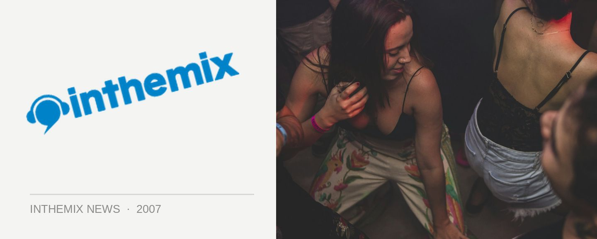

Get yer Shore Thing set times
Sydney’s biggest New Year’s Eve event returns to Bondi courtesy of Fuzzy, and they’ll be bringing with them one of the worlds finest dance acts in the form of the UK’s Groove Armada, as well as out own Sneaky Sound System. Check below for set times!
Even if you caught Groove Armada at the V Festival earlier this year, you’ll be in for a treat tonight: as Andy Cato recently revealed in an interview with ITM which you can read HERE, they’ve recently beefed up their live show considerably. “The prospect of playing Australia on New Years Eve is going to be quite special. We came to Australia earlier in the year and did a couple of great gigs there, particularly one at Centennial Park in Sydney,” he says.
“But since then we’ve recruited this new lighting guy who used to work with Orbital a lot and he’s a totally inspirational figure. The system he came up with for presenting our live set just blew us away to the extent that we went back to the beginning and we’ve changed all the tracks to be worthy of their new setting. We just finished a tour of the UK where people who weren’t necessarily GA fans before were describing it as the best live show they’ve ever seen so I can’t wait to do that on NYE in Australia.”
Excited? Check out set times here…
9.00-10.20: PTY LTD (live 5 piece)
10.20-10.40: Ember
10.40-11.40: Sneaky (live 3 piece)
11.40-12.00: Funktrust DJs
12.00-1.45: Groove Armada
1.45-3.00: Tom Findlay